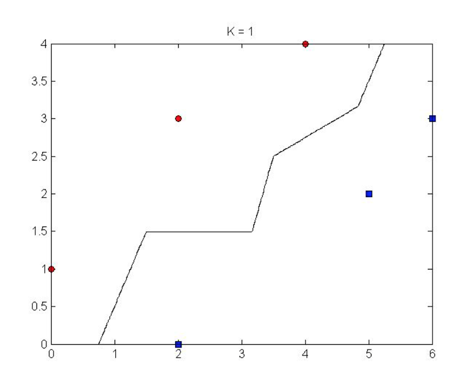
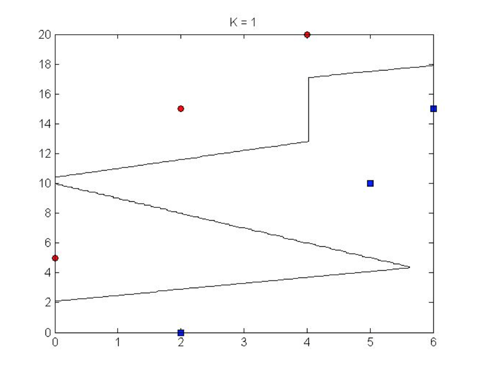
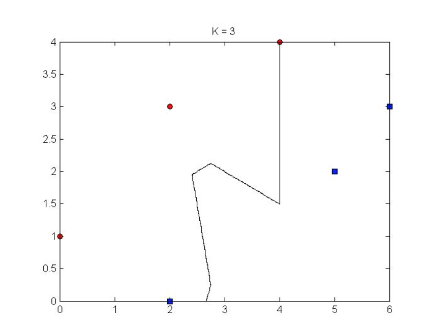
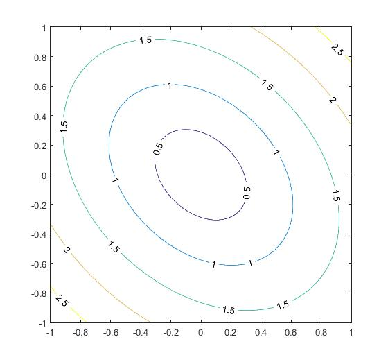

Recall that the expectation and variance of a continuous random variable $X$ are given by $$\mathbb{E}[X] = \int_{-\infty}^{\infty} x p(x) dx$$ $$\text{Var}(X) = \mathbb{E}[(X-\mathbb{E}[X])^2]$$ where $p(x)$ is the probability density function. Let $X$ and $Y$ be independent continuous random variables and let $a \in \mathbb{R}$. Using the above definitions, derive the expectation and variance of the following random variables in terms of $\mathbb{E}[X]$, $\mathbb{E}[Y]$, $\text{Var}(X)$ and $\text{Var}(Y)$:
(a) $X + a$
Solution: Let $\mu_X = \mathbb{E}[X]$.
\begin{align*} \mathbb{E}[X+a] &= \int_{-\infty}^{\infty} (x+a) p(x) dx \\ &= \int_{-\infty}^{\infty} x p(x) dx + a \int_{-\infty}^{\infty} p(x) dx \\ &= \mathbb{E}[X] + a \\ \text{Var}(X+a) &= \int_{-\infty}^{\infty} (x + a - (\mu_X + a))^2 p(x) dx \\ &= \int_{-\infty}^{\infty} (x - \mu_X)^2 p(x) dx \\ &= \text{Var}(X) \end{align*}(b) $aX$
Solution: Let $\mu_X = \mathbb{E}[X]$.
\begin{align*} \mathbb{E}[aX] &= \int_{-\infty}^{\infty} ax p(x) dx \\ &= a \int_{-\infty}^{\infty} x p(x) dx \\ &= a \mathbb{E}[X] \\ \text{Var}(aX) &= \int_{-\infty}^{\infty} (ax - a\mu_X)^2 p(x) dx \\ &= a^2 \int_{-\infty}^{\infty} (x - \mu_X)^2 p(x) dx \\ &= a^2 \text{Var}(X) \end{align*}(c) $X + Y$
Solution: Let $\mu_X = \mathbb{E}[X]$ and $\mu_Y = \mathbb{E}[Y]$. Since $X$ and $Y$ are independent, we may factorize their joint distribution $p(x,y) = p(x) p(y)$.
\begin{align*} \mathbb{E}[X+Y] &= \int_{-\infty}^{\infty} \left( \int_{-\infty}^{\infty} (x+y) p(x) dx \right) p(y) dy \\ &= \int_{-\infty}^{\infty} \left( \int_{-\infty}^{\infty} x p(x) dx \right) + \left( \int_{-\infty}^{\infty} y p(x) dx \right) p(y) dy \\ &= \int_{-\infty}^{\infty} (\mathbb{E}[X] + y) p(y) dy \\ &= \int_{-\infty}^{\infty} \mathbb{E}[X] p(y) dy + \int_{-\infty}^{\infty} y p(y) dy \\ &= \mathbb{E}[X] + \mathbb{E}[Y] \\ \text{Var}(X+Y) &= \int_{-\infty}^{\infty} \left( \int_{-\infty}^{\infty} (x + y - \mu_X - \mu_Y)^2 p(x) dx \right) p(y) dy \\ &= \int_{-\infty}^{\infty} \left( \int_{-\infty}^{\infty} (x - \mu_X)^2 + 2(x - \mu_X)(y - \mu_Y) + (y - \mu_Y)^2 p(x) dx \right) p(y) dy \\ &= \int_{-\infty}^{\infty} \left( \int_{-\infty}^{\infty} (x - \mu_X)^2 p(x) dx + 2(y - \mu_Y)\int_{-\infty}^{\infty} (x - \mu_X) p(x) dx + \int_{-\infty}^{\infty} (y - \mu_Y)^2 p(x) dx \right) p(y) dy \\ &= \int_{-\infty}^{\infty} \left( \text{Var}(X) + 2(y - \mu_Y) \cdot 0 + (y - \mu_Y)^2 \right) p(y) dy \\ &= \int_{-\infty}^{\infty} \text{Var}(X) p(y) dy + \int_{-\infty}^{\infty} (y - \mu_Y)^2 p(y) dy \\ &= \text{Var}(X) + \text{Var}(Y) \end{align*}In this problem, you are going to look at a small dataset to understand various properties of k-NN better. Suppose there is a set of points on a two-dimensional plane from two different classes. Below are the coordinates of all points.
Points in class Red: (0, 1), (2, 3), (4, 4)
Points in class Blue: (2, 0), (5, 2), (6, 3)
(a) (5 points) Draw the k-nearest-neighbor decision boundary for k = 1. Remember that the decision boundary is defined as the line where the classification of a test point changes. Use the standard Euclidean distance between points to determine the nearest neighbors. Start by plotting the points as a two-dimensional graph. Please use the corresponding colors for points of each class (e.g, blue and red).
Solution:
To construct the decision boundaries by hand, draw a line perpendicular to the line connecting each pair of differently labeled points at the midpoint. Then, erase the overlapping parts.
(b) (5 points) If the y-coordinate of each point was multiplied by 5, what would happen to the k = 1 boundary (Draw another picture)? Explain in at most two sentences how this effect might cause problems when working with real data.
Solution:
The decision boundary does not scale linearly with the points - it is now more heavily influenced by the y-coordinates. If we were to continue to increase the size of the y-coordinates, the boundary would come to resemble a set of four horizontal lines. Many real data sets uses coordinates with mixed units; if the data is not normalized the scale of the units will impact the classier.
(c) (5 points) The k-NN decision boundary for k = 3 is shown as below. Suppose now we have a test point at (1, 2). How would it be classied under 3-NN? Given that you can modify the 3-NN decision boundary by adding points to the training set in the diagram, what is the minimum number of points that you need to add to change the classication at (1, 2)? Show also where you need to add these points.
Solution:
We can see from the figure that this point would be classified as Red. To change its result, we need to add at least 2 blue points because the two nearest neighbors to (1,2) are both of class Red. They can be added anyhwere within a circle of radius $\sqrt{2}$ around (1, 2).
(d) (5 points) What is the testing complexity for one instance, e.g., how long does it take for kNN to classify one point? Assume your data has dimensionality d, you have n training examples and use Euclidean distance. Assume also that you use a quick select implementation which gives you the k smallest elements of a list of length m in O(m).
Solution:
Computing the distances between a test point and all training examples takes O(n*d) time. Afterwards, we need to determine the k nearest neighbors in O(n) time (on average). So in total, our time complexity is O(n*d) on average.
In k-nearest-neighbor classification, the distance metric used plays a crucial role in the model's accuracy. It is often useful to consider distance metrics aside from the Euclidean distance. One class of distance metrics used in machine learning is the so-called Mahalanobis distance.
A function $d : \mathbb{R}^d \times \mathbb{R}^d \rightarrow \mathbb{R}$ is called a distance metric if for all $x,y,z \in \mathbb{R}^d$, it satisfies the following axioms:
(i) (non-negativity) $d(x,y) \geq 0$
(ii) (identity of indiscernibles) $d(x,y) = 0 \Leftrightarrow x = y$
(iii) (symmetry) $d(x,y) = d(y,x)$
(iv) (triangle inequality) $d(x,z) \leq d(x,y) + d(y,z)$
Let $x,y \in \mathbb{R}^d$ and let $M \in \mathbb{R}^{d \times d}$ be a positive definite matrix and define $$d_M(x,y) = \sqrt{(x-y)^\top M (x-y)}.$$
(a) Show that $d_M$ is a distance metric. (Hint: A positive definite matrix has only positive eigenvalues. Use the eigendecomposition of $M$ to show that $M = L^\top L$ for some suitable $L$.)
Solution: For a symmetric real matrix $M$, let $M = PDP^\top$ be its eigendecomposition. Let $D^{1/2}$ denote the matrix formed by taking the square root of the diagonal matrix $D$. Since $M$ is positive definite, the eigenvalues of $M$ are all positive, so $D^{1/2}$ is well-defined.
Let $L = (PD^{1/2})^\top$ so $M = L^\top L$. Then
\begin{align*} d_M(x,y) &= \sqrt{(x-y)^\top M (x-y)} \\ &= \sqrt{(x-y)^\top L^\top L (x-y)} \\ &= \sqrt{\|L(x-y)\|_2^2} \\ &= \|L(x-y)\|_2 \end{align*}This shows (i), (iii) and (iv). (ii) follows since $P$ is full-rank and $D^{1/2}$ is a diagonal matrix with positive diagonal values, so $L = (PD^{1/2})^\top$ is full-rank, i.e. $Lx = 0$ if and only if $x = 0$.
(b) Consider $d=2$ and $$M = \begin{bmatrix} 3 & 1 \\ 1 & 3 \end{bmatrix}.$$ Sketch the unit circle defined by $d_M$. You may (but not required to) use any plotting software available (e.g. Matlab).
Solution: The eigendecomposition of $M$ is
$$P = \begin{bmatrix} -\sqrt{2}/2 & \sqrt{2}/2 \\ \sqrt{2}/2 & \sqrt{2}/2 \end{bmatrix},$$ $$D = \begin{bmatrix} 2 & 0 \\ 0 & 4 \end{bmatrix}.$$ The columns of $P$ are the major and minor axes of the ellipse in the contour of $d_M$. The major and minor radii of the unit circle are the diagonal values of $D^{-1/2}$. (c) Is $d_M$ still a distance metric if $M$ is not positive definite?
(d) Is $d_M$ still a distance metric if $M$ is positive semi-definite but not positive definite?
For parts (c) and (d), either prove that $d_M$ is a distance metric or specify at least one of the axioms of a distance metric that $d_M$ does not satisfy.
Solution for (c) and (d): No in both cases. For (c), if $M$ is not positive definite then $d_M(x,y)$ can be ill-defined. Consider
$$M = \begin{bmatrix} -1 & 0 \\ 0 & -1 \end{bmatrix}.$$For $x = (1,1)^\top$ and $y = (0,1)^\top$, we have $d_M(x,y) = \sqrt{(1,0) M (1,0)^\top} = \sqrt{-1}$, which is not a real number.
For (d), the argument in (a) follows through until reasoning about (ii), in which case $L$ is no longer full-rank, so (ii) is violated. In this case, $d_M$ is called a pseudo-metric.